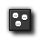
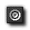
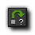
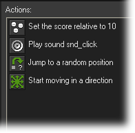

Tutorial
Page 9 of 15
The Mouse Event
Finally we need to define what to do when the user clicks with the left mouse on the clown. We are going to add four actions here...
First we will add 10 points to the score. This is easy as Game Maker automatically keeps and displays a score for you. Next we will play the click sound. Then, after this, we will jump the clown to a random position,
and we will set a new random direction of motion with a slightly increased speed. The last two actions are added to gradually increase the difficulty of the game.
The following steps explain how to create the mouse event that we require:
- Press the Add Event button. In the Event Selector click on the Mouse Event and in the sub-menu that appears select Left Pressed. This event happens when the user presses the left mouse
button while the mouse cursor is on top of the instance and will only be triggered once for each press.
- From the tab labeled Score include the Set Score action.

- As new score indicate a value of 10 and also click on the box next to the property Relative to enable it. When Relative is enabled the value is added to the current score, otherwise the score would be
replaced by the value.
- From the tab Main1 include a Play Soundaction and for the sound indicate "snd_click". Leave Loop as false.

- From the Move tab, include a Jump to Random action, which places the instance in a random, collision-free position. The parameters can be left unchanged for this action.

- Finally we include a Move Fixed action.
- Again select all eight arrows (and not the center square) and for the speed indicate a value of 0.5 and enable the Relative property to add 0.5 to the current speed.
That is all the actions we need for the Mouse Event and the finished event list should look like this:

We are now finished with the clown object. We have included actions for the three events that are important, so press the OK button to close the form.
Click on the Next button to go to the next page of the tutorial.